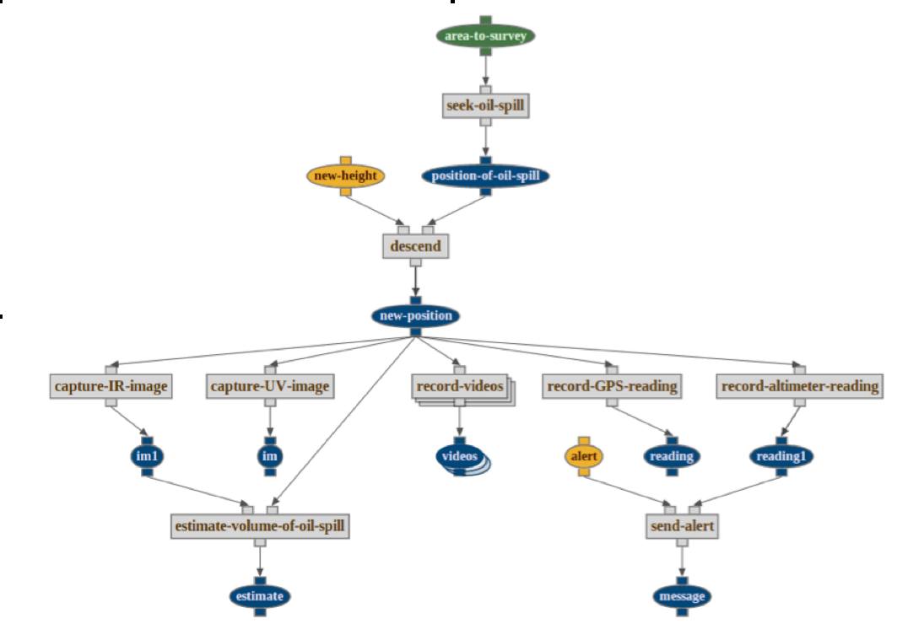
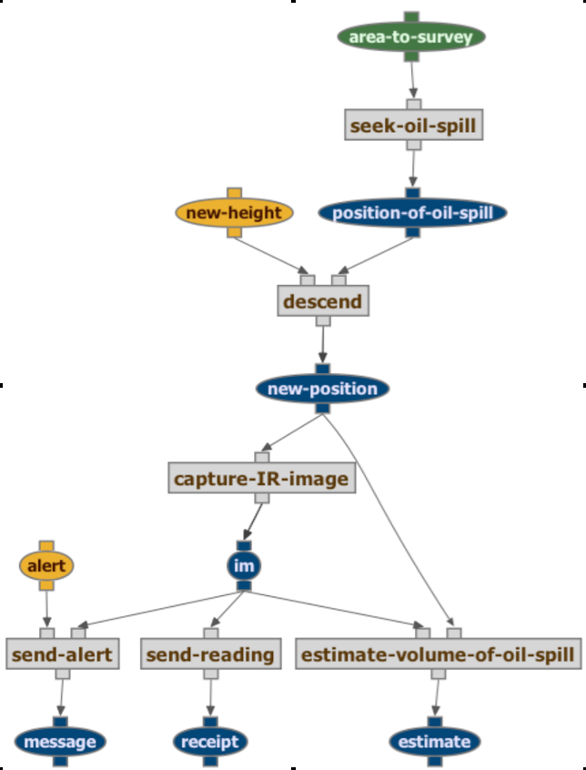
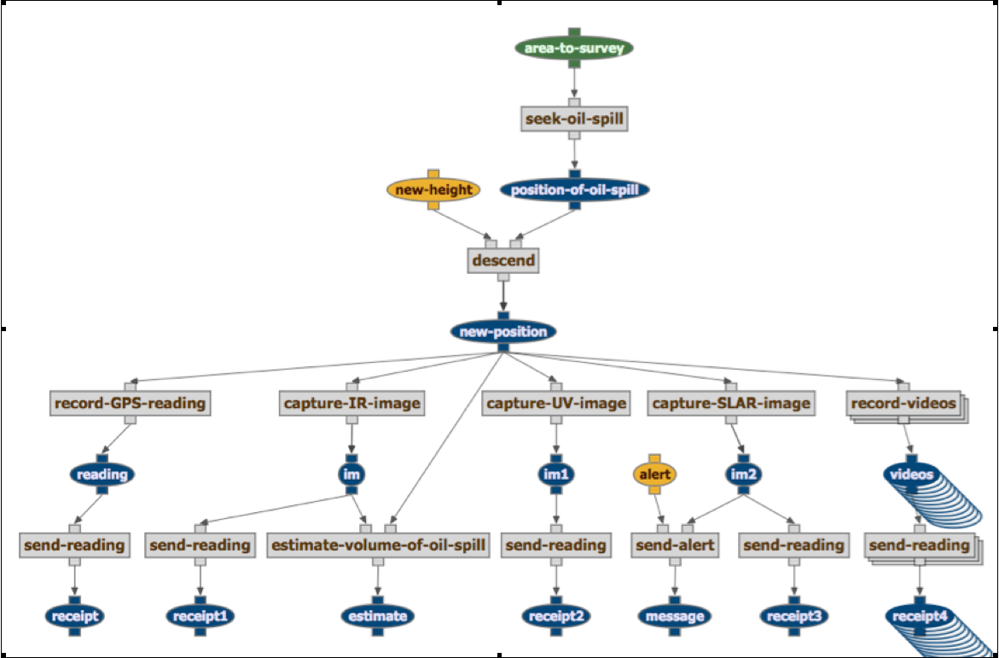
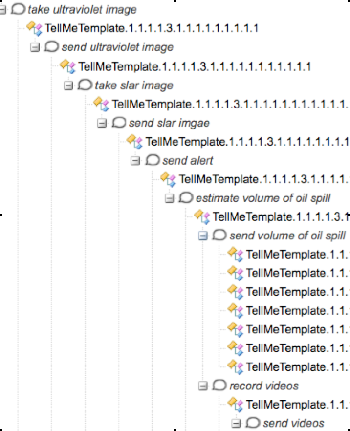
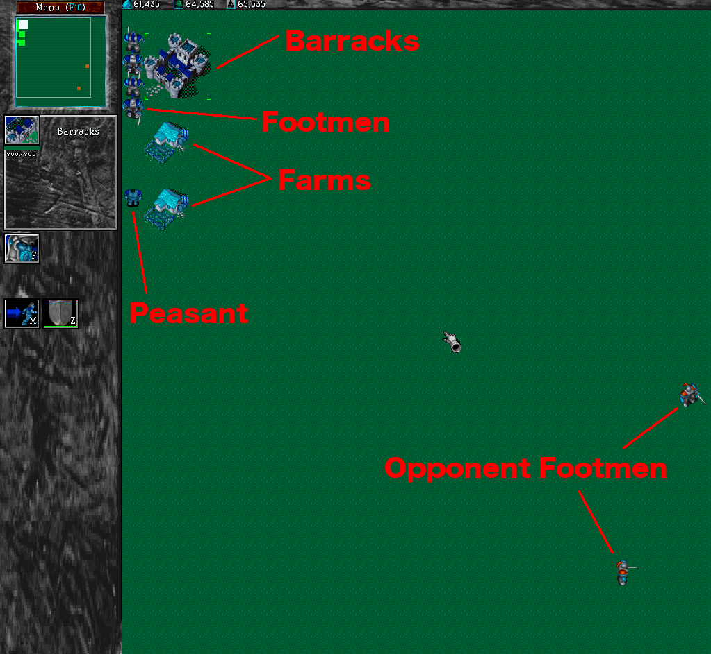
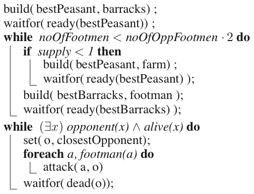
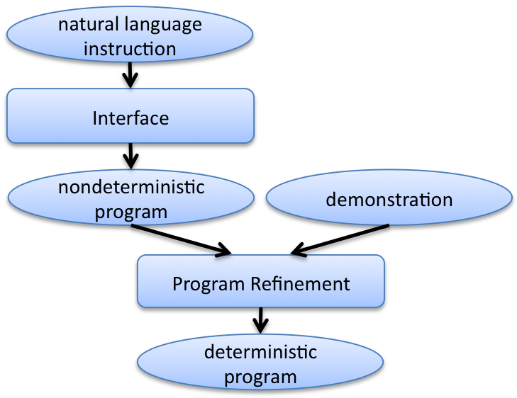

|
|

|
| Learning from natural tutorial instruction | |
Status
We are currently focusing on two aspects of this work:- Learning Procedures from Tutorial Instruction.
- A Framework for Combining Instruction and Demonstration.
Learning Procedures from Tutorial Instruction
We have implemented an extension to the Wings Workflow System that allows users to author new procedures and edit existing procedures using natural language instruction.
To illustrate how this works, consider a scenarios where the system learns procedures executed by airplane pilots to patrol an area looking for oil pollution from ships. The user is teaching the kinds of reconnaissance tasks that pilots do in the Belgian Navy, which are scenarios that we chose for our evaluation, as we will describe later on. The system starts off having a number of primitive actions for recording the situation with a variety of instruments, including infrared and ultraviolet cameras, SLAR cameras, and digital picture and video cameras. There are also primitive actions to send alerts and reports back to the base, and to generate initial estimates of the volume of the spill.
The following is an example of the utterances and the interaction of a user with the system to teach a procedure where a plane is to descend closer once a spill is found, then take videos and send them to the headquarters, and to record the GPS readings and send them along as well.
User: "find oil spill, descend to a position of height 200"The following is a screeshot of TellMe, documenting the state of teaching after going through the steps of this interaction.The system shows the user that it assumes that meant to descend after finding the spill. It also shows the user an alternative interpretation where the descent was meant to happen before finding the spill. It asks the user to either accept the assumed interpretation and if not to choose the alternative.
User: "film the spill"The system indicates it did not understand that
User: "record videos and send them"The system shows the user that it assumes that meant to iterate over each of the videos and send each in turn, since the send action is defined for sending one document at a time.
The system shows the user that the result of sending the videos is a series of message receipts.
The system shows that it assumes the position to be after the descent, it also shows the alternative interpretation that it is the position before descending.
User: "record GPS reading"The system shows the user that it assumes that the instruction meant to record the GPS reading over the position after descending. It also shows the user an alternative interpretation which is to record the GPS reading at the position when the spill was first found. It asks the user to either accept the assumed interpretation and if not to choose the alternative.
User: (selects the latter option)
User: "record image"The system shows three interpretations, one for the action to record IR image, another for record UV image, and another to record SLR image
User: "send thickness image"The system shows the user that it is not familiar with the term high level alert, but that it assumes it is a kind of alert given the context in which the term is used. The user does not have to interrupt the instruction and define it now.
The system shows the user that the send action requires some evidence as input, and that it assumes that to be the output of the record GPS reading action.

The current procedure hypothesis is shown on the right hand side: At the bottom a dataflow diagram is shown. At the top, a set of constraints is shown, most of which were inferred by the system from the utterances of the user and any available domain knowledge. In many cases, the user's instruction is ambiguous and the system creates alternative interpretations, each resulting in a different procedure hypotheses. To show that it is considering these hypotheses, it shows them in the History panel, where the user can view them (e.g., in the figure after five utterances: "TellMeTemplate.1.1.1.1.1" - "TellMeTemplate.1.1.1.1.4"). The user is always asked to select one of them.
Can Non-Programmers Use TellMe?
We conducted initial formative user studies. The goal was to collect feedback on the overall approach and to find out whether there were any major barriers for users to communicate procedural knowledge with our interface. The following example procedures were generated by non-programmers, and show what non-programmers are capable of achieving using TellMe. 
The following procedure is accompandied by the instructions that were used to create it.  
A Framework for Combining Instruction and Demonstration
We have developed a formal framework that allows for the use of program demonstrations to resolve several types of ambiguities and omissions that are common in such instructions. The framework effectively combines some of the benefits of programming by demonstration and programming by natural instruction.The key idea of our approach is to use non-deterministic programs to compactly represent the (possibly infinite) set of candidate programs for given instructions, and to filter from this set by means of simulating the execution of these programs following the steps of a given demonstration. Due to the rigorous semantics of our framework we can prove that this leads to a sound algorithm for identifying the intended program, making assumptions only about the types of ambiguities and omissions occurring in the instruction.
We have implemented our approach and demonstrate its ability to resolve ambiguities and omissions by considering a list of classes of such issues and how our approach resolves them in a concrete example domain. Our empirical results show that our approach can effectively and efficiently identify programs that are consistent with both the natural instruction and the given demonstrations.
Currently our system is able to resolve the following kinds of issues commonly occurring in human instruction, when combined with a demonstration of the target program in an example scenario:- mapping of objects to action arguments,
- missing action arguments,
- ambiguous references like "him" or "it",
- ambiguous scoping of conditionals and iterations, and
- unknown terms to refer to known actions or functions.
Learning Complex Game Playing Procedures
To evaluate our approach's ability to resolve types of omissions and ambiguities that are common in human instruction we consider procedures in the open-source real-time strategy game Stratagus/Wargus1. In this game, the goal of the player is to defeat all of the opponent's agents using his own footmen. Footmen units can be built in barracks, which in turn can be built by peasants. In order to provide food for his units, the player also needs sufficient supplies, which are provided by farms. Farms can, again, be built by peasants and each farm provides enough supply for four units. As an example, we consider a family of scenarios where initially the player only has one peasant, and the opponent, controlled by the computer, has N footmen. In order to win, the player has to first use his peasant to build barracks where he then can build footmen. In order to do so, he also needs to build farms to create the supplies for the footmen. The following screen-shot shows the situation where the player completed building barracks, farms, and four footmen (twice as many as the opponent's) and is now ready to attack the opponent. Outnumbering the opponent by a factor of two he is certain to win the game.
As a running example in this paper, we will show how a user can teach this general procedure to the computer by combining natural instruction and a demonstration in an example scenario with two opponent footmen. The procedure that will be taught will be applicable to any scenario where there is at least one peasant and any number of opponent footmen. The strategy is to always build twice as many footmen before attacking the opponent. This procedure contains several loops and iterations over sets.
Instructions generally contain several types of omissions and ambiguities simultaneously. Consider the following text, which is understood by our interface. These instructions omit action arguments, lack scopes for loops and iterations, use unknown terms, and contain ambiguous references.
Example: "Build barracks using bestPeasant then wait until bestPeasant is ready, while noOfFootmen is less than noOfOppFootmen times 2, if supply is less than 1 then build farm, wait until bestPeasant is ready, create footman, wait until bestBarracks is ready, while there is an opponent who is alive, take the closestOpponent, forall footman attack him, wait until he is dead."
Using our current implementation, we can take this instruction and combine it with this demonstration to generate the following target program: A full log of our current set of evaluation experiments can be found here. This file contains for each experiment: the utterances of the user, the representation of these utterances as a non-deterministic program, and the refined program created from this via consideration of the given demonstration.
Approach
The key ideas of our approach are as follows:- We can represent (infinite) sets of program hypotheses using non-deterministic programs, in particular we can represent the incomplete procedures that can result from a PbI system. These are used to represent uncertainty about the target program being learned. In particular, we use the logical programming language Golog which readily allows us to represent and reason about such non-deterministic programs. A Golog program can be understood to represent sets of deterministic programs, namely all those that would result by resolving the non-determinism in one way or another. We have developed a simple, controlled grammar based interface that generates Golog programs from English instructions. This PbI system uses Golog's non-deterministic programming constructs in places where instructions are ambiguous or incomplete.
- We can refine these program hypotheses learned through PbI based on an example from a PbD system. We extend Golog's semantics to implement the update function that removes from a set of hypotheses all those that are inconsistent with newly given demonstrations. This is implemented as refinements to the program representing the version space, resolving some of the uncertainty, i.e., making some non-deterministic parts of the program deterministic. In many cases, a single example can be sufficient to resolve all nondeterminism, resulting in the following data-flow: 
- We can integrate any two program hypotheses into a single one, for example to integrate the output of a PbI system with the output of a PbD system that has learned from several demonstrations. We accomplish this by defining a mechanism for Golog program synchronization that implements a provably sound and complete means of computing symbolic intersection of (possibly infinite) sets of hypotheses.